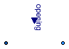

| Name | Description |
|---|---|
| Base model for valves | |
| Functions for valve characteristics |

This is the base model for the ValveIncompressible, ValveVaporizing, and ValveCompressible valve models. The model is based on the IEC 534 / ISA S.75 standards for valve sizing.
The model optionally supports reverse flow conditions (assuming symmetrical behaviour) or check valve operation, and has been suitably regularized, compared to the equations in the standard, in order to avoid numerical singularities around zero pressure drop operating conditions.
The model assumes adiabatic operation (no heat losses to the ambient); changes in kinetic energy from inlet to outlet are neglected in the energy balance.
Modelling options
The following options are available to specify the valve flow coefficient in fully open conditions:
The nominal pressure drop dp_nominal must always be specified; to avoid numerical singularities, the flow characteristic is modified for pressure drops less than b*dp_nominal (the default value is 1% of the nominal pressure drop). Increase this parameter if numerical problems occur in valves with very low pressure drops.
If checkValve is true, then the flow is stopped when the outlet pressure is higher than the inlet pressure; otherwise, reverse flow takes place. Use this option only when neede, as it increases the numerical complexity of the problem.
The valve opening characteristic valveCharacteristic, linear by default, can be replaced by any user-defined function. Quadratic and equal percentage with customizable rangeability are already provided by the library.
The treatment of parameters Kv and Cv is explained in detail in the Users Guide.
Extends from Modelica.Fluid.Interfaces.PartialTwoPortTransport (Partial element transporting fluid between two ports without storage of mass or energy).
| Type | Name | Default | Description |
|---|---|---|---|
| replaceable package Medium | PartialMedium | Medium in the component | |
| Flow Coefficient | |||
| CvTypes | CvData | CvTypes.OpPoint | Selection of flow coefficient |
| Area | Av | 0 | Av (metric) flow coefficient [m2] |
| Real | Kv | 0 | Kv (metric) flow coefficient [m3/h] |
| Real | Cv | 0 | Cv (US) flow coefficient [USG/min] |
| Nominal operating point | |||
| Pressure | dp_nominal | Nominal pressure drop [Pa] | |
| MassFlowRate | m_flow_nominal | Nominal mass flowrate [kg/s] | |
| Density | rho_nominal | Medium.density_pTX(Medium.p_... | Nominal inlet density [kg/m3] |
| Real | opening_nominal | 1 | Nominal opening |
| Assumptions | |||
| Boolean | allowFlowReversal | system.allowFlowReversal | = true to allow flow reversal, false restricts to design direction (port_a -> port_b) |
| Boolean | checkValve | false | Reverse flow stopped |
| Advanced | |||
| AbsolutePressure | dp_start | dp_nominal | Guess value of dp = port_a.p - port_b.p [Pa] |
| MassFlowRate | m_flow_start | m_flow_nominal | Guess value of m_flow = port_a.m_flow [kg/s] |
| MassFlowRate | m_flow_small | system.m_flow_small | Small mass flow rate for regularization of zero flow [kg/s] |
| Pressure | dp_small | system.dp_small | Regularisation of zero flow [Pa] |
| Diagnostics | |||
| Boolean | show_T | true | = true, if temperatures at port_a and port_b are computed |
| Boolean | show_V_flow | true | = true, if volume flow rate at inflowing port is computed |
| Type | Name | Description |
|---|---|---|
| FluidPort_a | port_a | Fluid connector a (positive design flow direction is from port_a to port_b) |
| FluidPort_b | port_b | Fluid connector b (positive design flow direction is from port_a to port_b) |
| input RealInput | opening | Valve position in the range 0-1 |
partial model PartialValve "Base model for valves"
import Modelica.Fluid.Types.CvTypes;
extends Modelica.Fluid.Interfaces.PartialTwoPortTransport(
dp_start = dp_nominal,
m_flow_start = m_flow_nominal,
m_flow_small = system.m_flow_small);
parameter CvTypes CvData=CvTypes.OpPoint "Selection of flow coefficient";
parameter SI.Area Av(
fixed=if CvData == CvTypes.Av then true else false,
start=m_flow_nominal/(sqrt(rho_nominal*dp_nominal))*valveCharacteristic(
opening_nominal)) = 0 "Av (metric) flow coefficient";
parameter Real Kv = 0 "Kv (metric) flow coefficient [m3/h]";
parameter Real Cv = 0 "Cv (US) flow coefficient [USG/min]";
parameter SI.Pressure dp_nominal "Nominal pressure drop";
parameter Medium.MassFlowRate m_flow_nominal "Nominal mass flowrate";
parameter Medium.Density rho_nominal=Medium.density_pTX(Medium.p_default, Medium.T_default, Medium.X_default)
"Nominal inlet density";
parameter Real opening_nominal=1 "Nominal opening";
parameter Boolean checkValve=false "Reverse flow stopped";
replaceable function valveCharacteristic =
Modelica.Fluid.Valves.BaseClasses.ValveCharacteristics.linear
constrainedby
Modelica.Fluid.Valves.BaseClasses.ValveCharacteristics.baseFun
"Inherent flow characteristic";
parameter SI.Pressure dp_small=system.dp_small "Regularisation of zero flow";
constant SI.Area Kv2Av = 27.7e-6 "Conversion factor";
constant SI.Area Cv2Av = 24.0e-6 "Conversion factor";
Modelica.Blocks.Interfaces.RealInput opening(min=0, max=1)
"Valve position in the range 0-1";
initial equation
if CvData == CvTypes.Kv then
Av = Kv*Kv2Av "Unit conversion";
elseif CvData == CvTypes.Cv then
Av = Cv*Cv2Av "Unit conversion";
end if;
equation
// Isenthalpic state transformation (no storage and no loss of energy)
port_a.h_outflow = inStream(port_b.h_outflow);
port_b.h_outflow = inStream(port_a.h_outflow);
end PartialValve;